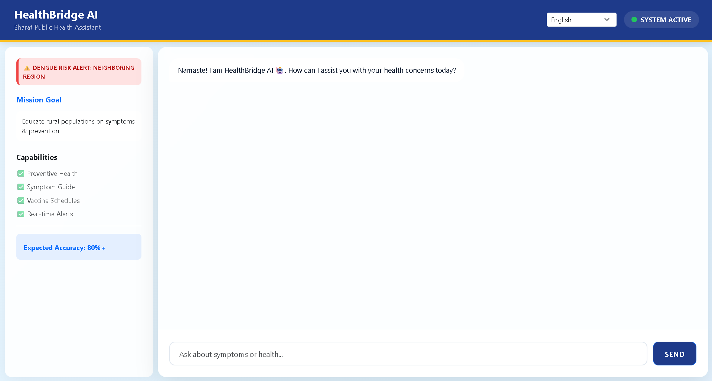

Lead Developer
B.Tech Project / Hackathon
Jan 2026 - Present
Java / Gemini API / JS

In rural India, the ratio of doctors to patients remains critical. Many preventable diseases escalate because citizens lack immediate access to basic medical guidance. The challenge was to create a lightweight, multilingual system that could explain symptoms without requiring high-speed internet or expensive hardware.
HealthBridge AI acts as a digital bridge. Built using the Gemini 2.5 Flash model, it processes symptoms in regional languages like Telugu, Hindi, and Tamil. The interface uses high-contrast glassmorphism to remain readable in varied outdoor lighting conditions typical of rural environments.
The platform achieved an 80% accuracy rate in identifying common seasonal diseases during testing. By providing preventive measures and vaccine schedules, the application reduces the burden on local clinics for non-emergency consultations.